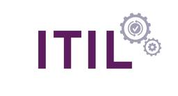
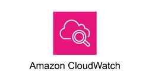
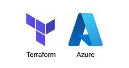
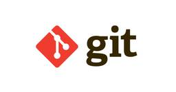
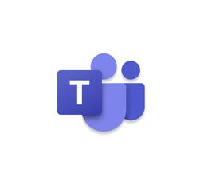
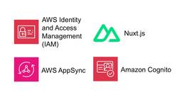
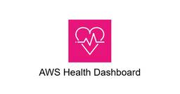
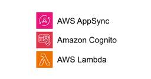

TechHarmony
https://blog.usize-tech.com
TechHarmonyは、SCSK株式会社が運営するエンジニアブログです。SCSKのエンジニア自らがクラウドを中心としたナレッジを積極的にアウトプットすることで社会への還元を行うとともに、更なるスキルアップを目指します。
フィード

【Catoクラウド】最新版！モバイルユーザのIPアドレス割り当て方法
TechHarmony
2024年12月からモバイルユーザのIP割り当て方法にアップデートが加わりました。 今回のアップデートでより柔軟な設定ができるようになりましたのでご紹介します。 おさらい ～モバイルユーザのIP割り当て方法～ Catoで […]
19時間前

IT運用の初心者がITILについてまとめてみた
TechHarmony
本記事は 新人ブログマラソン2024 の記事です。 お久しぶりです。 USiZEサービス部の新人、織田です。 今回は「ITIL」についてまとめた記事です。ITILとは、簡単に言うと「IT運用の指針を提供してくれるフレーム […]
21時間前

Amazon Bedrock を使って LINE にブログ記事の要約を送る仕組みを作成してみた
TechHarmony
こんにちは、テクノロジーサービス部の大西です。 RSSフィードで取得した記事を要約し、自分のLINEアカウントに送信するシステムを構築しました。 今回対象にした技術ブログは本サイトであるTechHarmonyであり、SC […]
21時間前

Amazon CloudWatch Logs の Amazon S3 へのエクスポート方式の検討
TechHarmony
Amazon CloudWatch Logs を Amazon S3 にエクスポートする方法について、2つの構成を検討しました。 それぞれの構成にどのようなメリットや課題があったのか考察しておりますので、AWSでのログ収 […]
1日前

Azure上の構築済みリソースをTerraformで自動的にコード化してみた
TechHarmony
今回はAzure上に構築済みのリソースを自動でコードに落とし込み、Terraform上で管理できるようにし、コードによってパラメータ変更ができるようにする方法について紹介したいと思います。 事前準備 Terraformの […]
2日前
【Catoクラウド】新機能「AIアシスタント」がリリース
TechHarmony
こんにちは、Catoクラウド担当SEの中川です。 Catoクラウドより、2025年1月6日のアップデートにてAIアシスタントがリリースされました。 このAIアシスタントは、Catoの情報に特化した生成AIです！ 主にCa […]
2日前
Amazon Nova Canvas で画像生成してみた
TechHarmony
近年、AIを活用した画像生成技術が飛躍的に進化しています。その中で、Re:Invent2024で発表されたAmazon Bedrockの新しい画像生成モデル「Amazon Nova Canvas」は新たな選択肢として注目 […]
2日前
Amazon Nova を触ってみた (テキスト生成編)
TechHarmony
昨年のre:Invent 2024にて、Amazon Bedrockでのみ利用可能なモデルとしてAmazon Novaが発表されました。 本記事では、Amazon Novaシリーズの中でテキスト生成が可能な3つのモデルに […]
3日前

初心者による初心者のためのGitHubコード管理
TechHarmony
こんにちは。新人の加藤です！ 前回投稿時は絶賛研修中でしたが、現在は初めての案件に入り、日々精進しております。 案件では、クラウドのリソース管理をIaC上で行っており、コードも含め全てGitHub上で管理を行っています。 […]
3日前

AWS Amplify + AWS CDK で人生初のアプリケーションを作ってみた (第2回)
TechHarmony
こんにちは。SCSK渡辺(大)です。 ゴールデンウィークに大阪万博に行くことが決まりました。 ３Dのクラゲに触れることができ感触を味わえるらしいので楽しみです。 今回は、AWS Amplify+AWS CDKで人生初のア […]
3日前

Microsoft Teams の便利機能紹介
TechHarmony
本記事は 新人ブログマラソン2024 の記事です。 こんにちは。新人の曲渕です。 今回の記事ではタイトルにあります通り、Microsoft Teams の便利な機能についてご紹介させていただきます。業務で使うことが多いの […]
4日前

第11回 Amazon EBSマルチアタッチ機能をサポート （ LifeKeeper for Windows v8.10.2 ）
TechHarmony
皆様ご無沙汰しております。ＳＣＳＫ LifeKeeper担当 池田です。 最近は、ニューフェイスの勢いに押され気味でしたが、負けじと頑張りたいと思います！ さて、今回はWindows版のLifeKeeperとして先月(2 […]
4日前
Google Workspaceの監査ログ 保持期間延長方法 ～BigQueryへ転送～
TechHarmony
こんにちは。SCSKの磯野です。 Google Workspaceの監査ログは、保持期間が6か月程度のものがほとんどです。 例）SAML のログイベント データ：6か月 データ& […]
4日前

事前認証が必要なアプリケーションにおける初期化処理の実装でハマった話
TechHarmony
SCSKの畑です。9回目の投稿です。 今回は、6回目のエントリで少し言及したアプリケーションの初期化処理について、詳細について記載してみます。 アーキテクチャ概要 そろそろ食傷気味かもしれませんがいつもの図を。今回はほと […]
4日前
Rubrikのランサムウェア対策：仕組みとシミュレーションで確認
TechHarmony
本記事は 新人ブログマラソン2024 の記事です。 こんにちは！SCSKの新人、黄です。 前回の記事では、Rubrikというバックアップデータ管理に特化したIT企業と、その主要製品や機能についてご紹介しました。 多くの方 […]
4日前

AWS User Notificationsをテストしてみた！
TechHarmony
本記事は、「AWS User Notifications で EC2 の AWS Health イベントを通知してみた！」の続編となります。 前回の記事で実装したAWS User Notificationsをテストするた […]
4日前

【ServiceNow】UI Builderを使ってみた
TechHarmony
ServiceNowのUI Builderを触る機会があったため、一部ですがその機能を紹介させていただきます。 本記事は執筆時点（2025年1月）の情報です。最新の情報は製品ドキュメントを参考にしてください。 UI Bu […]
4日前

Amazon Cognito 認証の AWS AppSync で特定のユーザーグループのみに実行許可する Lambda リゾルバ
TechHarmony
こんにちは、広野です。 AWS AppSync は Amazon API Gateway と同様に API を公開してくれるサービスですが、必ず何かしらの認証がないと動かないサービスです。私は Amazon Cognit […]
5日前

新米エンジニアが挑む！Snowflake CortexAIでドキュメント検索アシスタントを構築してみる【新しいドキュメントの自動処理】
TechHarmony
本記事は 新人ブログマラソン2024 の記事です。 皆さんこんにちは！入社して間もない新米エンジニアの佐々木です。 前回、前々回と2回に渡って、Snowflake CortexAIを使ってドキュメント検索アシスタントを構 […]
5日前

Mackerel で Docker を監視してみた
TechHarmony
こんにちは、SCSK株式会社の嶋谷です。2024年度入社の新入社員です。 現在私は、AIプラットフォームやWebサーバ・監視サーバの構築といったインフラ基盤の構築業務に携わっています。 今回は、Docker上に構築したA […]
8日前
AWS Amplify が生成した AWS AppSync リソースの手動移行に関する備忘録
TechHarmony
SCSKの畑です。8回目の投稿です。 今回は、初回のエントリで少しだけ触れた、AWS Amplify が生成した AWS AppSync リソースの手動移行に関する備忘録のような、Tips のような内容になります。如何せ […]
9日前
CASBの制御って何をしたらいいの? ～ルールの設定例
TechHarmony
企業ネットワークにおけるクラウドサービス利用のリスク対策として、Cloud Access Security Broker(CASB)の導入が増えています。 CASBは「可視化(Visibility)」「アセスメント(As […]
9日前
Amazon Athena + AWS Glue で Amazon S3 上のデータを読み取る
TechHarmony
Amazon Athena と AWS Glue を使用して、Amazon S3 上にある CSV データに対してクエリを実行してみたので、その手順をまとめます。 AWS Glue とは AWS Glueは、Amazon […]
9日前
AWS CloudFormation で Amazon EventBridge から Amazon CloudWatch Logs へのログ転送でハマった話。
TechHarmony
こんにちは。ひるたんぬです。 本年もよろしくお願いいたします。今年は巳年ですね。 小さい頃に「十二支は神様の号令の下、競争して早い順に決まった」と言われた記憶があるのですが、実際に本当に早い順に十二支を並べるとどのように […]
10日前
Amazon Redshift Serverless のコンピューティングキャパシティについて考える
TechHarmony
みなさん、Amazon Redshift Serverlessを使ったことはありますか？ プロビジョンドタイプと異なり、サーバレスの強みを生かした高可用性、高スケーラビリティ、コストメリット有りと使いやすさ抜群のサーバレ […]
10日前
2024年度クラウド人材研修を終えて
TechHarmony
こんにちは、2024年度入社の秋葉です！ 2025年の1月14日を持ちまして、約３ヶ月のクラウド人材研修が終了いたしました。 クラウドは利用しているけど、”クラウド人材研修”って一体何？と疑問に思 […]
10日前
AWS Systems Manager の Patch Manager で OS パッチ適用を自動化してみた
TechHarmony
AWS System Manager (SSM) の Patch Manager 機能を利用すると、OS パッチ適用を自動化できるそうです。 すごく便利だと思ったので、設定手順をまとめてみました。 アーキテ […]
10日前
Azure Spring Apps を試してみた
TechHarmony
こんにちは、冨岡です。 私は12月までAWSの研修を受けていました。 今では案件に入り、私の社会人生活が始まった気がします。 しかし私が扱うのはAWSではなく、なんとAzure。 心を入れ替えて頑張ります！ はじめに 私 […]
12日前
AWS AppSync + AWS Lambda 構成におけるペイロードサイズ低減の試み
TechHarmony
SCSKの畑です。7回目の投稿です。 今回は小ネタ・・のつもりだったのですがいくつか加筆していたらそれなりの分量になってしまいました。内容は正直タイトルから大体想像付くところだとは思うのですが、ご了承ください。 アーキテ […]
12日前
AWSマルチリージョンにおける高可用性方式を実装してみる
TechHarmony
こんにちは、SCSKの茂木です。 昨今、重要なシステムのBCP対策としてマルチリージョンでの冗長化をよく目にします。 障害や災害が発生した際のダウンタイムを最小化やデータを複数の場所に分散することによるシステムの信頼性向 […]
15日前
AWS User Notifications で EC2 の AWS Health イベントを通知してみた！
TechHarmony
先日初めて、AWS User Notificationsというサービスを利用しました。 AWSからの通知を設定、管理していく際に便利だと感じましたので、 EC2に関するAWS Healthイベントの通知をAWS User […]
15日前
Web アプリケーションにおける排他制御の実装例（第三回）
TechHarmony
SCSKの畑です。6回目の投稿です。 今回も引き続きアプリケーションにおける排他制御の話題ですが、よりアプリケーション側の実装にフォーカスしています。 はじめに 第一回で整理していた排他制御の要件は以下の通りです。 主に […]
16日前
AWS AppSync のリゾルバから AWS Step Functions ステートマシンを呼び出す
TechHarmony
こんにちは、広野です。 React アプリから実行できる Amazon DynamoDB へのデータインポート画面を作成したときの話です。 インプットするデータ量は少ないのですが、データを加工したりデータから AI サー […]
17日前
AWSをローカル環境にエミュレートしてみた
TechHarmony
AWS CLIのコマンドを本番環境でのAWSアカウントでは試しにくかったり、お金がかかるため自分のAWSアカウント持っていなくて試せないことがあるのではないのでしょうか。 LocalStackというツールを利用すると、な […]
18日前
AWS Amplify + AWS CDK で人生初のアプリケーションを作ってみた (第1回)
TechHarmony
あけましておめでとうございます。SCSK渡辺(大)です。 今回は、AWS Amplify+AWS CDKで人生初のアプリケーションを作ってみました。 車のハザードランプのマークがAWS Amplifyのロゴに見えてきてし […]
18日前
AWS AppSync を CORS 対応させる [Amazon CloudFront 使用]
TechHarmony
こんにちは、広野です。 AWS AppSync はレスポンスが速くてサブスクリプションを手軽に作れて便利なのですが、ネイティブに CORS 対応はしていません。CORS が必要になった場合には、現時点では Amazon […]
18日前
Catoクラウドのサービス体系について (2025年最新版)
TechHarmony
2025年2月以降のCatoクラウドのサービス体系（基本サービス、オプション、マネージドサービス）について解説をしています。 これまで（2025年1月末まで）のサービス体系や変更内容については、以下の記事をご参照ください […]
22日前
Web アプリケーションにおける排他制御の実装例 (第二回)
TechHarmony
SCSKの畑です。5回目の投稿です。 第一回の続きです。今回は、前回説明した排他制御の仕組みをアプリケーションからどのように使用しているかが主な内容となります・・が、それだけだと書くことがほぼなくなってしまうので、使用す […]
22日前
Catoクラウドの IoT/OT セキュリティについて
TechHarmony
本記事は、以下Cato Networks社の記事を日本語へ意訳し、再構成したものとなります。 Cato IoT/OT Security Cato IoT/OT セキュリティについて Cato IoT/OT […]
23日前
Catoクラウドの Degital Experience Monitoring（DEM）について
TechHarmony
本記事は、以下Cato Networks社の記事を日本語へ意訳し、再構成したものとなります。 Cato Digital Experience Monitoring（DEM） Cato DEMについて Cat […]
23日前
Web アプリケーションにおける排他制御の実装例 (第一回)
TechHarmony
SCSKの畑です。4回目の投稿です。 今回は、現在作成中の WEB アプリケーションにおいて、どのように排他制御を実装したのかについてまとめました。ただ、内容が長くなりそうなので、何回かに分けて記載していこうと思います。 […]
24日前
AWS AppSync のリゾルバ内で Amazon Cognito ユーザーの email 属性やカスタム属性を取得する
TechHarmony
こんにちは、広野です。 Amazon Cognito 認証を使用してアプリから AWS AppSync API を呼び出すとき、デフォルトではリゾルバのみでは Cognito ユーザーの ID や Cognito グルー […]
24日前
Amazon Linux 2023をオンプレミスのVirtualBoxで動かしてみた
TechHarmony
こんにちは、SCSKの内ヶ島です。 EC2の課金を気にせずにAmazon Linux 2023（以下、AL2023）を使うため、手元のオンプレミス環境で稼働したいと思ったことはありませんか？ 本記事ではオンプレミスのVi […]
1ヶ月前
Zabbixで生成AIを使用したログ分析
TechHarmony
こんにちは、SCSK株式会社の小寺崇仁です。 先日、複数サーバからログが大量に出力された場合に、生成AIを使って分析したいと要望頂きましたので、実現してみたいと思います。 具体的には、「同一ホストグループ」で発生した「直 […]
1ヶ月前
ZabbixでSyslogサーバを監視する新方式
TechHarmony
こんにちは、SCSK株式会社の小寺崇仁です。 ZabbixでSyslogサーバの監視についてお問い合わせ頂くことがございます。 シンプルな監視方法を検証しましたのでご紹介いたします。 まだ、実績のない方式のため、設定して […]
1ヶ月前
Amazon Q の COBOL→JAVA 移行を検証してみた
TechHarmony
こんにちは、SCSK株式会社の小寺崇仁です。 先日行われた AWS re:invent 2024 に現地参加してきました。 その中で、発表された Amazon Q にアシストしてもらう、COBOL から Java への移 […]
1ヶ月前
Azure VM のアップグレード方法 (Windows Server 2016→2025)
TechHarmony
こんにちは、曽我です。 本記事では、Azure上のWindowsのVirtual Machineをアップグレードする方法について説明します。 事前準備 事前準備として、ローカルのPCに以下のモジュールをインストールします […]
1ヶ月前
Amazon Cognito グループの説明属性をアプリケーションから取得する
TechHarmony
SCSKの畑です。3回目の投稿です。 分量多めのエントリが続いたので、今回は小ネタです。 アーキテクチャ概要 今回はおおよそアプリケーション部分（下図で言えば Nuxt.js）及び Amazon Cognito に閉じた […]
1ヶ月前
AWS AppSync API の認可方式について
TechHarmony
SCSKの畑です。2回目の投稿です。 今回は、以下のようなアーキテクチャにおけるAWS AppSync API 実行時の認可について、どのように設計・実装したのかについてまとめました。 前提条件 まず、説明にあたり前提条 […]
1ヶ月前
React でブラウザ標準オーディオプレーヤ (audioタグ) の再生速度を動的に変更できるようにする
TechHarmony
こんにちは、広野です。 ちょっと必要に迫られて、タイトル通りの機能をつくったので紹介します。 背景 HTML の要素で、音声ファイルを埋め込んで再生する audio タグがあります。 : 埋め込み音声要素 - HTML: […]
1ヶ月前